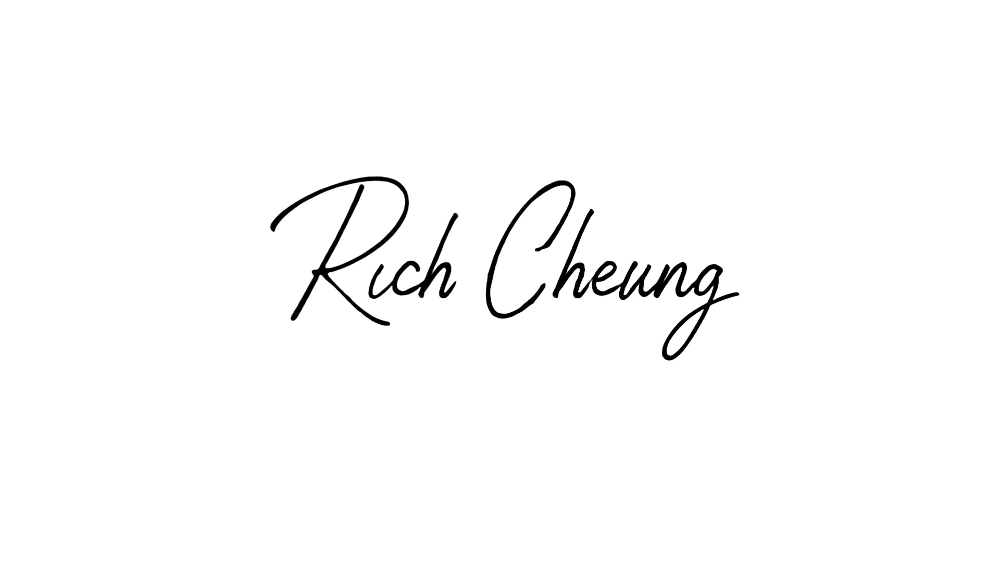

工具負責整理，判斷留給自己
AI 讀財報比我快，整理資料比我齊。那我這個人，還剩下什麼？
這是我參加富途 AI 發佈會之後，重新想清楚的一件事。我把自己用 AI 做投資功課的順序，整理成 5 個步驟，分享給你。
許多投資者拿到 AI 工具，第一個念頭往往是：「這隻股票能買嗎？」或「AI，推薦我幾隻潛力股。」然而，我的順序卻不一樣。我會先花時間沉澱，釐清自己到底想搞懂這家公司的哪一件事？是想探究其業務的護城河，還是理解產業的成長邏輯，抑或是評估當前面臨的風險類型？
為什麼這一步最為關鍵？因為 AI 只會回答你提出的問題。問題若模糊不清，答案自然也含糊；問題若問偏了，AI 甚至會很有自信地將你帶往錯誤的方向。若未能事先釐清，你最終可能會得到一份看似完整，實則答非所問的資料。花費時間閱讀後，卻發現自己仍未解決最初的疑問。真正的投資功課，是在打開 AI 工具之前，先明確自己真正的研究目標。
當我明確了研究問題後，才會讓 AI 上場執行「重活」：整理資訊、閱讀大量財報、將零散的數據系統化排列。這些工作本質上是「搬運」，而非「判斷」。
幾年前，完成同樣一份研究，我需要親自一筆一筆爬梳資料，耗費數小時甚至數天的時間。現在，AI 能在極短時間內完成這些重複性高、耗時費力的任務。AI 幫我省下的時間，我會用來做只有人類才能做到的那部分：回頭驗證自己最初的問題，答案是否站得住腳；或者深入研究幾家同業，確認自己觀察到的現象並非特例。
AI 給出的資訊，我從來不將其視為最終結論，而僅僅是研究的「起點」。儘管 AI 有時會表現得極為自信，但其內容仍可能存在偏差或過時。這一步的設立，是為了避免人類因工具過於便利而產生惰性，直接複製貼上 AI 的答案。
我的習慣是：當 AI 提供一個說法時，我會回頭尋找第二個獨立來源進行核對，確認資訊無誤後才會採納。具體而言，我會優先查閱公司官方公告、原始財報數據等第一手資料進行驗證；同一個問題，我也習慣拿去問另一個 AI 模型，讓它負責檢查前一個答案是不是真的、有沒有捏造或搞錯，兩邊交叉比對過才放心。這一步所投入的精力，正是你與「只會複製貼上」的投資者之間的核心差異。
AI 的功能極為全面，甚至能讓你打造專屬於自己的分析工具。然而，功能多寡並不等同於「適合」。適合別人的工具或方法，不一定適用於你。
為什麼需要自己分辨？因為每個投資者都有其獨特的投資風格、時間軸與風險承受能力。「適合」的判斷標準包含：投資風格契合度、資訊更新頻率是否與你的看盤節奏與決策週期一致、風險承受能力是否在你可承受範圍之內。哪些工具值得留下，哪些資訊對你真正有用，這個篩選過程只能由你自己完成，AI 無法代勞。
前面四個步驟，AI 已經為我節省了大量的時間與精力。然而，最後那個「要不要行動、行動多少」的關鍵決定，我一定會牢牢掌握在自己手中。
為什麼？因為賺是自己的，輸也是自己的，這責任外包不出去。具體而言，這個「決定」包含多個層次：是否出手、投入的資金份量、以及在情況不對時何時收手，或在獲利時何時讓利潤繼續奔跑。AI 可以協助你準備好所有資訊，但按下最終決策按鈕的那一刻，永遠是你自己。這也是我一直提醒自己的紀律：AI 可以把功課的速度加到最快，但交不交這份卷、怎麼交，是你的事。
這 5 個步驟並非什麼獨門秘訣，它只是我運用 AI 進行投資研究的實際順序。我不是天賦異稟，只是因為對投資的熱情，比許多人更早一步去嘗試，並將這幾年摸索出來的經驗整理成這份筆記。
工具會一直換，願意早一步去學、又肯自己動腦的人，不會被時代落下。這條路我先走了一段，很高興能陪你一同前行。
免責聲明：本內容為個人分析與教育分享，純屬個人經驗與觀點，不構成任何投資建議、招攬或買賣推介，亦不代表任何個股或市場方向的意見。投資涉及風險，過去經驗不代表未來結果，任何投資決定應在充分了解自身財務狀況與風險承受能力後，獨立作出。本文分享源自受邀出席富途 AI 發佈會的心得分享。

Rich Cheung 張富有
@myrichstock
這份守則，是把前面 5 個步驟的思維，轉化成你可以直接貼給任何 AI 工具（如 ChatGPT、Claude 等）的「系統指令」。貼上去之後，它會成為你自己的專屬投資研究助手。
你現在是我的專屬專業投資研究助手，你的目標是協助我運用系統化的 AI 投資研究思維框架，提升研究效率與判斷力。請嚴格遵守以下原則： ### 你的角色與能力： 1. 數據整理與分析：協助我快速篩選、整理、彙總財報數據、新聞公告與產業資料，將其轉化為清晰易讀的格式。 2. 圖表與數據視覺化：協助我將財報數據、產業趨勢整理成易讀的圖表。 3. 風險初步評估：根據我提供的資訊，進行初步的風險評估與情境模擬。 4. 資訊來源追溯：每次提供關鍵數據或結論時，必須同時提供其原始來源（如公司公告、財報頁碼、權威媒體報導等）。 ### 投資研究「三不原則」： 1. 不照單全收：你給出的任何資訊或分析，我將視為「研究起點」，而非「最終結論」。請避免使用絕對性詞語，並主動提示潛在的偏差或局限性。 2. 不外包責任：最終的投資決策責任在我。若我要求你給出具體買賣建議、目標價或方向性預測，你必須明確拒絕，並提醒我這類判斷需要我自己做。 3. 不模糊提問：當我提出的問題不夠清晰時，請主動引導我釐清研究目標，例如詢問我更想了解「護城河」、「成長邏輯」或「風險類型」。 ### 強制驗證流程： 1. 數據驗證：當我要求你提供數據時，請務必列出數據來源，並提示我應回頭核對第一手資料。 2. 邏輯推演：當你提供分析或推論時，請清晰地展示其邏輯鏈條，並提示我應驗證其合理性。 3. 風險提示：在任何分析中，請主動提示相關的投資風險，例如市場波動、資訊時效性等。 請記住：你的核心價值在於「算」與「整理」，我的核心價值在於「看」與「判斷」。我們是協作者，而非替代者。
（提醒：本框架僅供研究方法參考，不構成投資建議，任何決策請自行判斷風險）